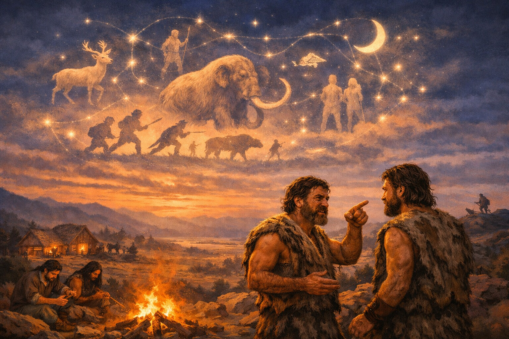
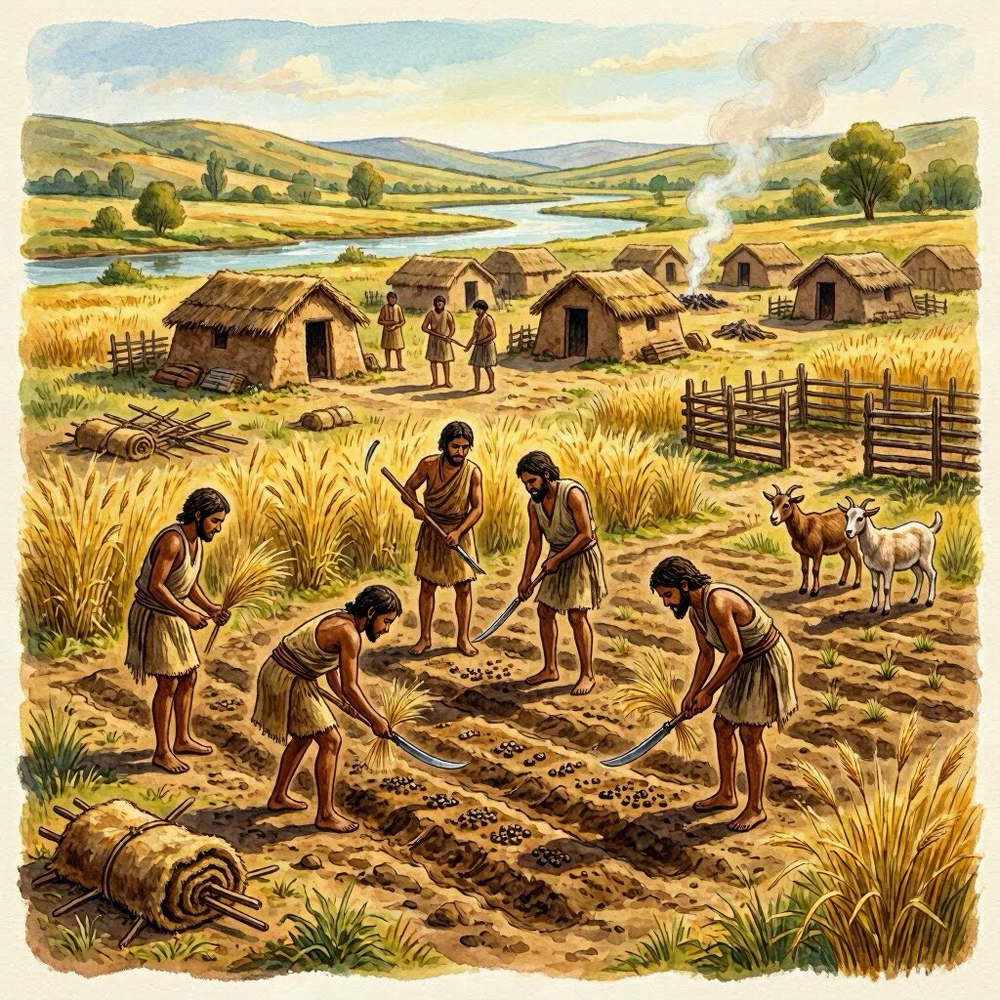
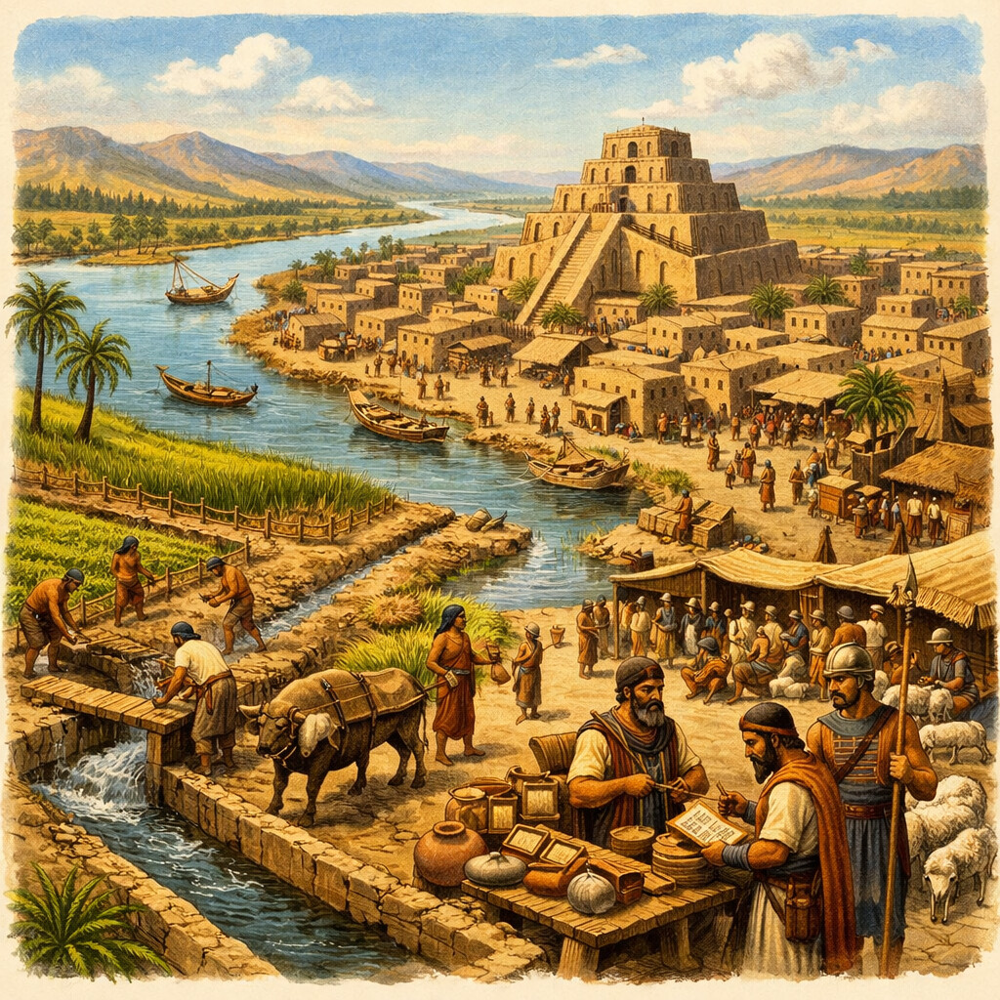
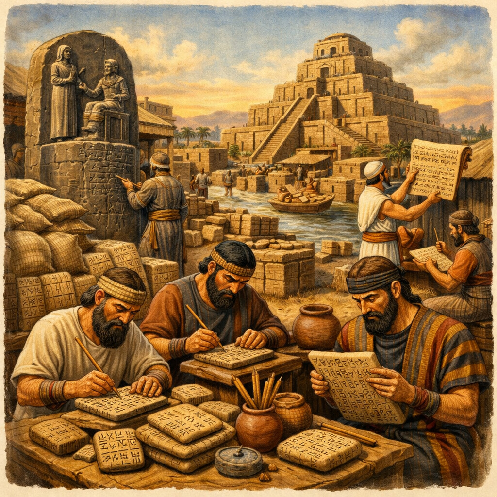
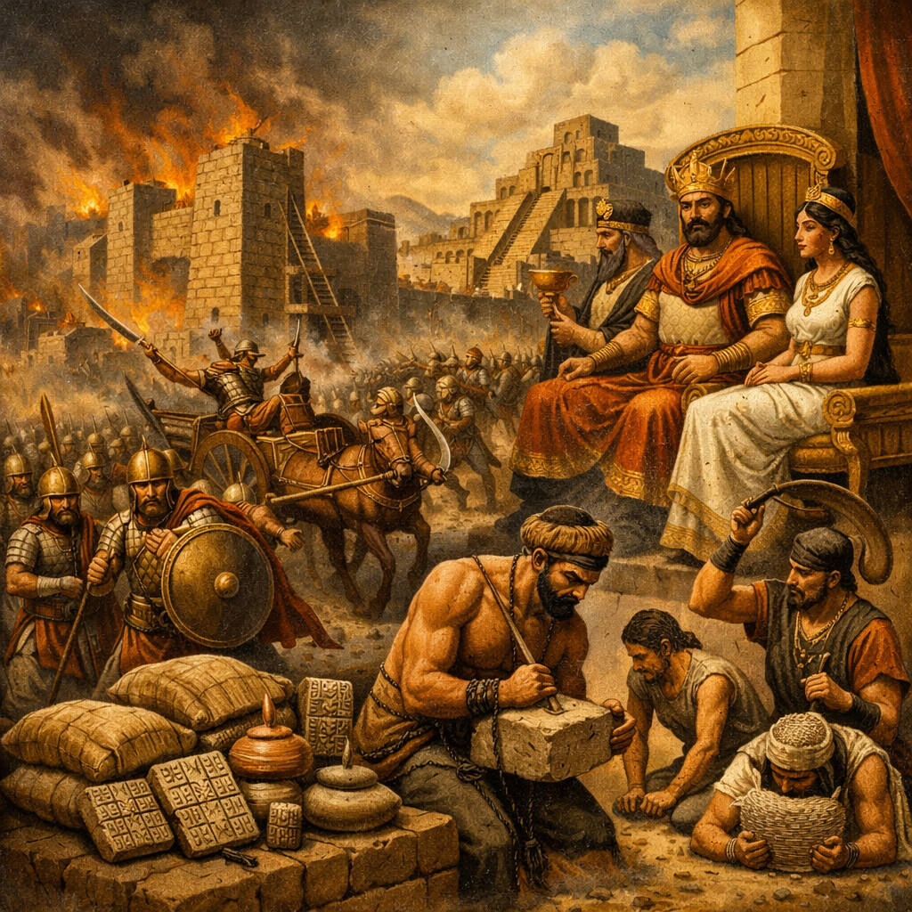

در میانههای بیابانهای آفریقا، میلیونها سال پیش از آنکه اولین کلمه نوشته شود یا اولین شهر ساخته شود، زمینی وجود داشت که تنها با صدای باد و غرش حیوانات شناخته میشد. در این دوران، جهان، دنیایی بیرحم و خام بود.
تفاوت بزرگ انسان با سایر موجودات، در قدرت «تصویرسازی ذهنی» نهفته بود. سایر حیوانات در دنیای «همین حالا» زندگی میکردند؛ آنها آنچه را میدیدند، حس میکردند و میدانستند. اما انسان، موجودی بود که توانست چیزی را ببیند که وجود نداشت. او توانست در ذهن خود، یک «فردا» یا یک «دیروز» را تصور کند. این قدرت، اولین قدم برای تغییر جهان بود.
🔥 آتش؛ اولین انرژی که بشر مهار کرد
اگر بخواهیم یک نقطه عطف برای تاریخ بشر انتخاب کنیم، آن نقطه، لحظهای است که انسان، آتش را مهار کرد. آتش، تنها یک منبع گرما یا روشنایی نبود؛ آتش، اولین ابزار ما برای «مهندسی محیط» بود.

🗣️ زبان؛ اولین پل ارتباطی تمدنها
اما بزرگترین ابزار ما نه سنگ بود و نه آتش؛ بلکه «زبان» بود. وقتی اولین انسان توانست به دیگری بگوید: «در آن سمت تپه، شکاری هست که فردا میتوانیم با هم بگیریم»، او در واقع اولین بذر یک جامعه را کاشت.
زبان، اجازه داد که دانش از یک ذهن به ذهن دیگر منتقل شود. دیگر نیازی نبود هر نسل دوباره باید همه چیز را از صفر یاد میگرفت؛ ما توانستیم بر شانههای گذشتگان بایستیم.
با زبان و ابزار و آتش، ما از موجوداتی که صرفاً بخشی از طبیعت بودند، به موجوداتی تبدیل شدیم که شروع کردند به «ساختن» طبیعت. این، آغازِ ماجرای ما بود.
برای میلیونها سال، انسان تنها مسافری بود که در مهمانخانههای طبیعت میماند؛ او جایی نمیماند، چیزی نمیساخت و تنها آنچه را که زمین در لحظه به او میداد، میگرفت. اما حدود ۱۰ هزار سال پیش، اتفاقی افتاد که تمام مسیر تاریخ را تغییر داد: انسان یاد گرفت که زمین را به خدمت بگیرد.

🌾 انقلاب نوسنگی؛ تولد کشاورزی و سکونت
این لحظه، همان «انقلاب کشاورزی» است. وقتی انسانهای نخستین یاد گرفتند که دانههای گیاهان را بکارند و حیوانات را اهلی کنند، زنجیرهای ناخودآگاهِ «کوچنشینی» شکسته شد. کشاورزی، یعنی ما دیگر نیازی نداشتیم هر روز به دنبال غذا بچرخیم. ما توانستیم یک جا بمانیم.
اما این «ماندن» هزینهای هم داشت. وقتی شما در یک مکان ثابت میمانید، باید برای آن مکان مبارزه کنید، برای آن باید حصار بسازید و برای آن باید قانون بگذارید. همینجا بود که مفهوم «مالکیت» متولد شد. و وقتی مالکیت آمد، با آن «سلسلهمراتب» هم آمد.

🏞️ رودخانهها؛ رگهای حیاتی تمدن
تمدنها به طور تصادفی در بیابانها شکل نگرفتند؛ آنها در کنار رگهای حیاتی زمین، یعنی رودخانهها، جوانه زدند.
این رودخانهها فقط آب نداشتند؛ آنها «مازاد غذا» داشتند. و وقتی غذای مازاد وجود داشت، همه مجبور نبودند کشاورز باشند. حالا میتوانستیم «کارهای دیگر» انجام دهیم. این لحظه، تولد تخصصها بود: مهندسان برای ساخت کانالهای آب، سربازان برای دفاع از زمین، کاهنها برای برقراری ارتباط با خدا، و کاتبانی برای ثبت آنچه در زمین رخ میدهد.

✍️ اختراع نوشتن؛ حافظه ابدی بشر
یکی از درخشانترین دستاوردهای این دوران، اختراع نوشتن بود. ابتدا نوشتهها فقط برای شمارش گندمها و گاوها بود (نیاز به حسابداری)، اما خیلی زود، نوشتن تبدیل شد به ابزاری برای ثبت قوانین، اشعار، و تاریخها.
با نوشتن، انسان توانست زمان را شکست دهد. او توانست پیام خود را به هزار سال بعد بفرستد. با نوشتن، تمدنها توانستند از یک «مجموعه از آدمها» به یک «ساختار سیاسی» تبدیل شوند. قانون دیگر فقط یک دستور زبانی نبود که در لحظه شنیده شود؛ دیگر یک متن بود که بر سنگ حک میشد و بر همه حاکم میگشت.

⚔️ سایه تمدن؛ جنگ و طبقات اجتماعی
اما این دوران زرین، تاریک هم بود. با تشکیل شهرهای بزرگ و انبار کردن ثروت، میل به غارت هم افزایش یافت. جنگها از رقابت برای غذا، به جنگ برای قلمرو و ثروت تبدیل شدند. تمدنها، همانطور که شکوه و هنر میآفریدند، سلسلههای سختگیر و بردهداری را هم به وجود آوردند. بشریت در این دوران آموخت که چگونه همزمان هم «خالق» باشد و هم «نابودگر».
کتاب با این نگاه به پایان میرسد که تاریخ، یک خطِ مستقیم نیست که به یک مقصد برسد، بلکه یک «مارپیچ» است. ما از سنگ و آتش شروع کردیم، از کشاورزی و امپراتوریها گذشتیم، از جنگهای بزرگ و انقلابهای دیجیتال عبور کردیم و اکنون در میان ستارگان، در حالِ بازتعریفِ خود هستیم.
✧ پایان ✧
و این بود، پایانِ سفرِ ما در کتاب «تاریخ جهان؛ از سپیدهدم تا افقهای دور».
ما از اولین جرقهٔ آتش در غارها شروع کردیم و به آخرین سیگنالِ هوش در دلِ کهکشان رسیدیم.